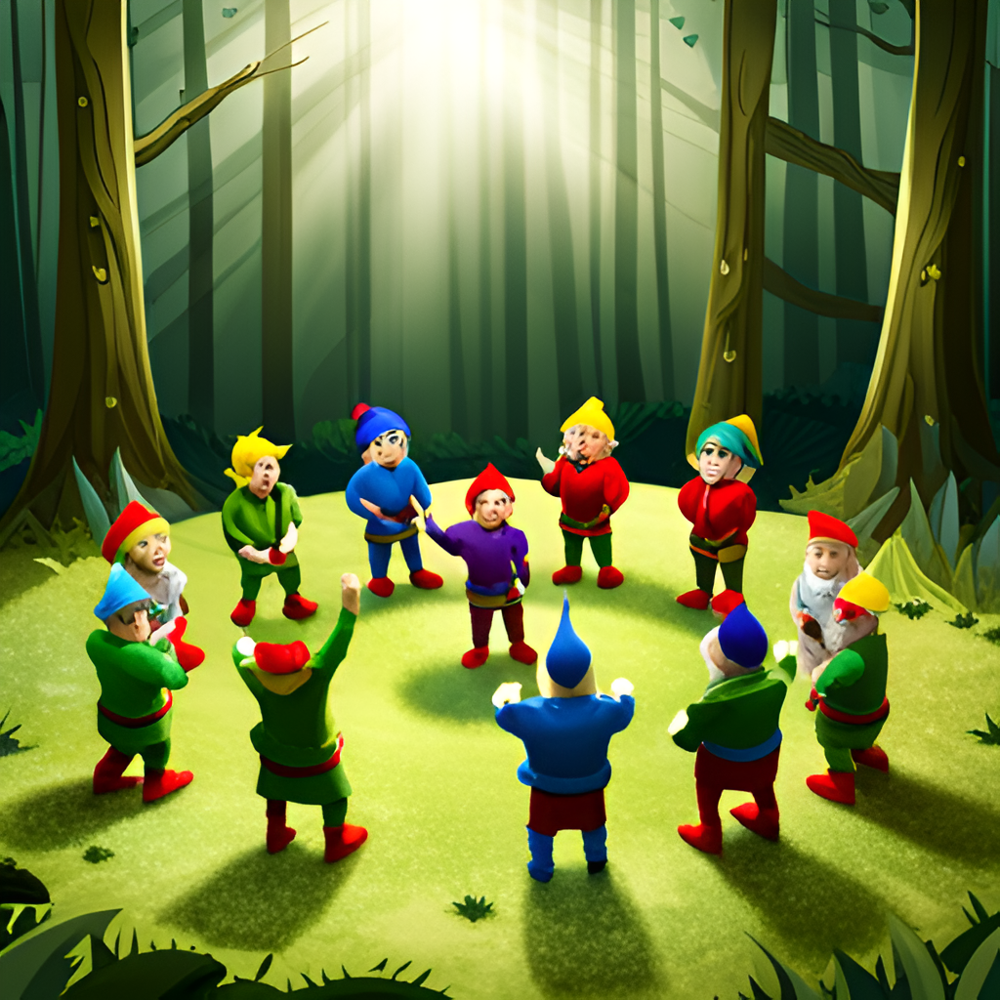

You choose to leave your friend behind, and continue into the woods. As you walk away you hear your friend screaming in pain.
You start running since you do NOT want to get involved with what that is.
After travelling for awhile you hear strangely beautiful singing coming from the trees a little ways off the trail.
Do you investigate the music, or do you ignore it?